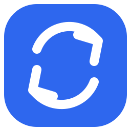

<!doctype html><html lang="en"><meta charset="utf-8"><meta name="viewport" content="width=device-width"><meta http-equiv="Content-Security-Policy" content="default-src 'none'; script-src 'sha256-0Ov4a3LKg3L+Yzkks6FqBm5nD5XrH85PN233Lwzh/8Q='; style-src 'unsafe-inline'; img-src 'self'"><title>Desksync</title><style>body{margin:0;background:#f6f8fc;color:#243047;font:16px system-ui;display:grid;place-items:center;min-height:100vh}.card{max-width:620px;padding:48px;background:white;border:1px solid #e1e6ee;border-radius:20px}img{width:64px}h1{font-size:28px}p{line-height:1.7;color:#5b6780;white-space:pre-wrap}button{background:#2e67ee;color:white;border:0;border-radius:9px;padding:12px 20px;font:inherit;cursor:pointer}</style><main class="card"><h1>Opening Desksync</h1><p id="message">Starting your private sync engine…</p><button id="retry" hidden>Try again</button></main><script>window.desksyncDesktop.onStartup(s=>{document.querySelector('h1').textContent=s.error?'Desksync needs attention':'Opening Desksync';document.querySelector('#message').textContent=s.message;document.querySelector('#retry').hidden=!s.error;});document.querySelector('#retry').onclick=()=>window.desksyncDesktop.retry();</script></html>
